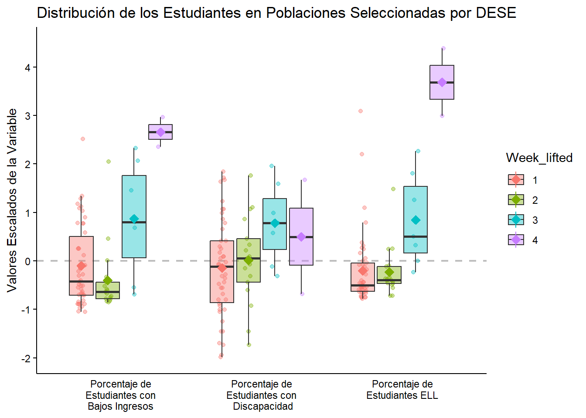

rm(list = ls())
library(pdftools)
library(tidyverse)
library(readxl)
library(zoo)TFG
Librerías
theme_tfg <- theme_minimal() +
theme(axis.title.x = element_blank(),
axis.text = element_text(color = "black"),
axis.line.x.bottom = element_line(color = "black"),
axis.line.y.left = element_line(color = "black"),
axis.ticks.y = element_line(color = "black"),
panel.grid.major = element_blank(),
panel.grid.minor = element_blank())Carga de los Datos
Los datos se han obtenido de la Massachussets DESE, donde los institutos públicos de Massachusetts informaban de forma semanal el número de casos Covid-19 detectados entre el alumnado y el profesorado. Se ha descargado los reportes correspondientes a las 40 semanas del año escolar del curso 2021-2022, el último reporte analizado data del 16 de junio.
Los reportes constan de la siguiente estructura:
La primera página se corresponde a un resumen de los resultados obtenidos.
A partir de la segunda página se listan los distritos junto al número de positivos entre el alumnado y el profesorado, así como el número de pruebas de grupo rutinarias, el número de positivos y su ratio.
A continuación, se muestra una tabla con los casos registrados en las organizaciones educativas colaboradoras.
Finalmente, se listan los casos registrados en los colegios aprobados de educación especial.
De este modo, el objetivo será extraer la información de las tablas correspondientes a la información de los distritos. Para ello, se ha implementado el siguiente código:
- Listado de los archivos. Se lista el nombre de los archivos pdf contenidos en la carpeta data/reportes_covid. También se extraerá la fecha contenida en el nombre:
archivos <- list.files("data/reportes_covid",pattern = ".pdf")- Extracción de los datos. Implementamos una función que permita extraer la información deseada.
La función recibe cómo parámetro un iterable con el nombre de los archivos y devuelve un dataframe con los datos correspondientes al código del distrito, nombre del distrito, número de casos covid-19 en alumnos, número de casos covid-19 en profesores, número de pruebas de grupo rutinarias, número de positivos y ratio positivos/pruebas.
obt_data_distritos <- function(archivos){
fechas <- str_extract(string = archivos, pattern = "\\d{4}-\\d{1,2}-\\d{1,2}")
df <- data.frame(Code = NA, Name = NA, Students = NA, Staff = NA, PT = NA, PPT = NA, PPR = NA, Date = NA)
for(i in 1:length(archivos)){
df2 <- pdf_text(paste0("data/reportes_covid/",archivos[i]))
p <- 2
fin <- FALSE
while(fin == FALSE){
if(p == 2){
aux <- df2[[p]] %>%
str_split("\n") %>%
as_tibble(.name_repair=make.names)
aux <- aux %>%
slice(7:nrow(aux)) %>%
separate(X, into = c("Code","Name","Students","Staff","PT","PPT","PPR"), sep = "\\s{2,}")%>%
filter(Code != "") %>%
mutate(Date = fechas[i])
}else{
aux <- df2[[p]] %>%
str_split("\n") %>%
as_tibble(.name_repair=make.names) %>%
separate(X, into = c("Code","Name","Students","Staff","PT","PPT","PPR"), sep = "\\s{2,}") %>%
filter(Code != "") %>%
mutate(Date = fechas[i])
}
df <- rbind(df,aux)
p = p + 1
fin <- grepl(pattern = "Education Collaboratives",df2[[p]])
}
}
return(df)
}
df <- obt_data_distritos(archivos)- Adecuación de las variables. Se convierten al tipo adecuado las variables obtenidas y eliminamos las filas que contenga en la variable
CodeNAs.
df <- df %>%
mutate(Students = as.numeric(Students),
Staff = as.numeric(Staff),
PT = as.numeric(PT),
PPT = as.numeric(PPT),
Date = as.Date(Date)) %>%
filter(!is.na(Code))Selección de los distritos escolares
selected_districts <- read_delim("data/selected_districts.csv",
delim = ";", escape_double = FALSE, trim_ws = TRUE)Rows: 72 Columns: 3
── Column specification ────────────────────────────────────────────────────────
Delimiter: ";"
chr (2): Name, Code
dbl (1): Week
ℹ Use `spec()` to retrieve the full column specification for this data.
ℹ Specify the column types or set `show_col_types = FALSE` to quiet this message.selected_districts$Week <- as.factor(selected_districts$Week)df <- df %>%
filter(Code %in% selected_districts$Code)
length(unique(df$Name))[1] 72sum(df$Students[df$Date >= as.Date("2022-03-03")]) + sum(df$Staff[df$Date >= as.Date("2022-03-03")])[1] 41476Preparación de los datos
df_stu <- df %>%
select(Code,Students,Date) %>%
pivot_wider(names_from = Code,values_from = Students) %>%
arrange(Date)
for(f in 2:nrow(df_stu)){
if(df_stu$Date[f] - df_stu$Date[f-1] >= 14){
sem_imp <- cbind(Date = df_stu$Date[f] - 7,df_stu[df_stu$Date == df_stu$Date[f],2:73] / 2)
df_stu[df_stu$Date == df_stu$Date[f],2:73] <- df_stu[df_stu$Date == df_stu$Date[f],2:73] / 2
df_stu <- rbind(df_stu,sem_imp)
}
}
df_stu <- df_stu %>% arrange(Date)
fecha <- df_stu$Date
df_stu <- as.data.frame(apply(df_stu %>% select(-Date),2,function(x){
for(f in 2:length(x)){
if(x[f] > 1 & x[f-1] == 0){
x[f-1] <- x[f]/2
x[f] <- x[f]/2
}
}
return(x)
}))
df_stu <- cbind(Date = fecha, df_stu)
df_stu <- df_stu %>% arrange(Date)
df_stu_smooth <- as.data.frame(apply(df_stu %>% select(-Date), 2, function(x){rollapply(floor(x),3,mean,align='center',fill=NA, partial = TRUE)}))
df_stu_smooth <- cbind(df_stu_smooth,Date = df_stu$Date)
df_stu_smooth <- df_stu_smooth %>%
pivot_longer(-73,names_to = "Code",values_to = "Students") %>%
filter(!is.na(Students))
df_stu_smooth$Students <- floor(df_stu_smooth$Students)
sum(df_stu_smooth$Students[df_stu_smooth$Date >= as.Date("2022-03-03")])[1] 32241df_staff <- df %>%
select(Code,Staff,Date) %>%
pivot_wider(names_from = Code,values_from = Staff) %>%
arrange(Date)
for(f in 2:nrow(df_staff)){
if(df_staff$Date[f] - df_staff$Date[f-1] >= 14){
sem_imp <- cbind(Date = df_staff$Date[f] - 7,df_staff[df_staff$Date == df_staff$Date[f],2:73] / 2)
df_staff[df_staff$Date == df_staff$Date[f],2:73] <- df_staff[df_staff$Date == df_staff$Date[f],2:73] / 2
df_staff <- rbind(df_staff,sem_imp)
}
}
df_staff <- df_staff %>% arrange(Date)
fecha <- df_staff$Date
df_staff <- as.data.frame(apply(df_staff %>% select(-Date),2,function(x){
for(f in 2:length(x)){
if(x[f] > 1 & x[f-1] == 0){
x[f-1] <- x[f]/2
x[f] <- x[f]/2
}
}
return(x)
}))
df_staff <- cbind(Date = fecha, df_staff)
df_staff <- df_staff %>% arrange(Date)
df_staff_smooth <- as.data.frame(apply(df_staff %>% select(-Date), 2, function(x){rollapply(floor(x),3,mean,align='center',fill=NA, partial = TRUE)}))
df_staff_smooth <- cbind(df_staff_smooth,Date = df_staff$Date)
df_staff_smooth <- df_staff_smooth %>%
pivot_longer(-73,names_to = "Code",values_to = "Staff") %>%
filter(!is.na(Staff))
df_staff_smooth$Staff <- round(df_staff_smooth$Staff)
sum(df_staff_smooth$Staff[df_staff_smooth$Date >= as.Date("2022-03-03")])[1] 8241sum(df_staff_smooth$Staff[df_staff_smooth$Date >= as.Date("2022-03-03")]) + sum(df_stu_smooth$Students[df_stu_smooth$Date >= as.Date("2022-03-03")])[1] 40482df_smooth <- left_join(df_staff_smooth,df_stu_smooth,by = c("Code","Date")) %>%
mutate(Total = Staff + Students)
df_smooth# A tibble: 2,880 × 5
Date Code Staff Students Total
<date> <chr> <dbl> <dbl> <dbl>
1 2021-09-16 00090000 0 11 11
2 2021-09-16 00260000 1 2 3
3 2021-09-16 00350000 14 22 36
4 2021-09-16 00400000 0 7 7
5 2021-09-16 00460000 0 4 4
6 2021-09-16 00480000 0 3 3
7 2021-09-16 00490000 0 3 3
8 2021-09-16 00500000 0 4 4
9 2021-09-16 00510000 0 0 0
10 2021-09-16 00570000 0 5 5
# ℹ 2,870 more rowsdf_smooth <- left_join(df_smooth,selected_districts %>% select(-Name))Joining with `by = join_by(Code)`df_smooth# A tibble: 2,880 × 6
Date Code Staff Students Total Week
<date> <chr> <dbl> <dbl> <dbl> <fct>
1 2021-09-16 00090000 0 11 11 2
2 2021-09-16 00260000 1 2 3 2
3 2021-09-16 00350000 14 22 36 4
4 2021-09-16 00400000 0 7 7 1
5 2021-09-16 00460000 0 4 4 3
6 2021-09-16 00480000 0 3 3 1
7 2021-09-16 00490000 0 3 3 3
8 2021-09-16 00500000 0 4 4 1
9 2021-09-16 00510000 0 0 0 2
10 2021-09-16 00570000 0 5 5 4
# ℹ 2,870 more rowsClassSizebyRaceEthnicity <- read_excel("data/ClassSizebyRaceEthnicity.xlsx",
skip = 1)
glimpse(ClassSizebyRaceEthnicity)Rows: 401
Columns: 12
$ `District Name` <chr> "Abby Kelley Foster Charter Publ…
$ `District Code` <chr> "04450000", "00010000", "0412000…
$ `Total # of Classes` <chr> "742", "994", "202", "2,188", "4…
$ `Average Class Size` <chr> "18.3", "21.0", "17.3", "19.4", …
$ `Number of Students` <chr> "1,421", "2,207", "497", "5,254"…
$ `African American %` <chr> "54.5", "5.5", "61.8", "3.0", "1…
$ `Asian %` <chr> "3.2", "2.7", "0.4", "33.5", "0.…
$ `Hispanic %` <chr> "20.6", "13.4", "29.0", "7.4", "…
$ `White %` <chr> "15.9", "75.8", "6.8", "50.8", "…
$ `Native American %` <chr> "0.4", "0.5", "0.0", "0.1", "0.2…
$ `Native Hawaiian, Pacific Islander %` <chr> "0.1", "0.1", "0.2", "0.1", "0.0…
$ `Multi-Race, Non-Hispanic %` <chr> "5.4", "2.0", "1.8", "5.2", "3.3…ClassSizebyRaceEthnicity[,3:12] <- apply(ClassSizebyRaceEthnicity[,3:12], 2, function(x){as.numeric(str_remove(x,","))})
ClassSizebyRaceEthnicity <- ClassSizebyRaceEthnicity[,1:9]
glimpse(ClassSizebyRaceEthnicity)Rows: 401
Columns: 9
$ `District Name` <chr> "Abby Kelley Foster Charter Public (District)", "…
$ `District Code` <chr> "04450000", "00010000", "04120000", "06000000", "…
$ `Total # of Classes` <dbl> 742, 994, 202, 2188, 493, 495, 2160, 280, 1177, 3…
$ `Average Class Size` <dbl> 18.3, 21.0, 17.3, 19.4, 18.0, 18.5, 16.0, 22.6, 1…
$ `Number of Students` <dbl> 1421, 2207, 497, 5254, 936, 965, 3573, 938, 1838,…
$ `African American %` <dbl> 54.5, 5.5, 61.8, 3.0, 1.3, 2.2, 2.2, 13.4, 1.6, 1…
$ `Asian %` <dbl> 3.2, 2.7, 0.4, 33.5, 0.9, 14.7, 3.6, 0.4, 1.1, 10…
$ `Hispanic %` <dbl> 20.6, 13.4, 29.0, 7.4, 4.6, 7.7, 11.8, 59.8, 9.6,…
$ `White %` <dbl> 15.9, 75.8, 6.8, 50.8, 89.7, 68.9, 79.2, 21.9, 83…df_smooth <- df_smooth %>% left_join(ClassSizebyRaceEthnicity %>% select(`District Code`,`Number of Students`), by = c("Code"="District Code"))df_smooth_grouped <- df_smooth %>%
group_by(Week,Date) %>%
summarise(Staff = sum(Staff), Students = sum(Students), Total = sum(Total), `Number of Students` = sum(`Number of Students`)) %>%
mutate(Students1000 = Students / `Number of Students` * 1000)`summarise()` has grouped output by 'Week'. You can override using the
`.groups` argument.df_smooth_grouped# A tibble: 160 × 7
# Groups: Week [4]
Week Date Staff Students Total `Number of Students` Students1000
<fct> <date> <dbl> <dbl> <dbl> <dbl> <dbl>
1 1 2021-09-16 18 173 191 140277 1.23
2 1 2021-09-23 28 169 197 140277 1.20
3 1 2021-09-30 33 189 222 140277 1.35
4 1 2021-10-07 36 208 244 140277 1.48
5 1 2021-10-14 39 225 264 140277 1.60
6 1 2021-10-21 39 221 260 140277 1.58
7 1 2021-10-28 39 204 243 140277 1.45
8 1 2021-11-04 35 226 261 140277 1.61
9 1 2021-11-12 40 290 330 140277 2.07
10 1 2021-11-18 48 393 441 140277 2.80
# ℹ 150 more rowsdf_smooth_grouped %>%
ggplot(aes(x = Date, y = Students1000, color = Week)) +
geom_point() +
geom_line() +
#scale_x_continuous(expand = c(0, 0)) +
scale_y_continuous(breaks=seq(0,35,5), expand = c(0.01, 0)) +
theme_tfg Otros indicadores
ClassSizebyRaceEthnicity <- read_excel("data/ClassSizebyRaceEthnicity.xlsx",
skip = 1)
glimpse(ClassSizebyRaceEthnicity)Rows: 401
Columns: 12
$ `District Name` <chr> "Abby Kelley Foster Charter Publ…
$ `District Code` <chr> "04450000", "00010000", "0412000…
$ `Total # of Classes` <chr> "742", "994", "202", "2,188", "4…
$ `Average Class Size` <chr> "18.3", "21.0", "17.3", "19.4", …
$ `Number of Students` <chr> "1,421", "2,207", "497", "5,254"…
$ `African American %` <chr> "54.5", "5.5", "61.8", "3.0", "1…
$ `Asian %` <chr> "3.2", "2.7", "0.4", "33.5", "0.…
$ `Hispanic %` <chr> "20.6", "13.4", "29.0", "7.4", "…
$ `White %` <chr> "15.9", "75.8", "6.8", "50.8", "…
$ `Native American %` <chr> "0.4", "0.5", "0.0", "0.1", "0.2…
$ `Native Hawaiian, Pacific Islander %` <chr> "0.1", "0.1", "0.2", "0.1", "0.0…
$ `Multi-Race, Non-Hispanic %` <chr> "5.4", "2.0", "1.8", "5.2", "3.3…ClassSizebyRaceEthnicity[,3:12] <- apply(ClassSizebyRaceEthnicity[,3:12], 2, function(x){as.numeric(str_remove(x,","))})
ClassSizebyRaceEthnicity <- ClassSizebyRaceEthnicity[,1:9]
glimpse(ClassSizebyRaceEthnicity)Rows: 401
Columns: 9
$ `District Name` <chr> "Abby Kelley Foster Charter Public (District)", "…
$ `District Code` <chr> "04450000", "00010000", "04120000", "06000000", "…
$ `Total # of Classes` <dbl> 742, 994, 202, 2188, 493, 495, 2160, 280, 1177, 3…
$ `Average Class Size` <dbl> 18.3, 21.0, 17.3, 19.4, 18.0, 18.5, 16.0, 22.6, 1…
$ `Number of Students` <dbl> 1421, 2207, 497, 5254, 936, 965, 3573, 938, 1838,…
$ `African American %` <dbl> 54.5, 5.5, 61.8, 3.0, 1.3, 2.2, 2.2, 13.4, 1.6, 1…
$ `Asian %` <dbl> 3.2, 2.7, 0.4, 33.5, 0.9, 14.7, 3.6, 0.4, 1.1, 10…
$ `Hispanic %` <dbl> 20.6, 13.4, 29.0, 7.4, 4.6, 7.7, 11.8, 59.8, 9.6,…
$ `White %` <dbl> 15.9, 75.8, 6.8, 50.8, 89.7, 68.9, 79.2, 21.9, 83…ClassSizebyGenPopulation <- read_excel("data/ClassSizebyGenPopulation.xlsx",
skip = 1)
glimpse(ClassSizebyGenPopulation)Rows: 401
Columns: 10
$ `District Name` <chr> "Abby Kelley Foster Charter Public (Dis…
$ `District Code` <chr> "04450000", "00010000", "04120000", "06…
$ `Total # of Classes` <chr> "742", "994", "202", "2,188", "493", "4…
$ `Average Class Size` <chr> "18.3", "21.0", "17.3", "19.4", "18.0",…
$ `Number of Students` <chr> "1,421", "2,207", "497", "5,254", "936"…
$ `Female %` <chr> "53.6", "49.1", "49.3", "48.2", "47.0",…
$ `Male %` <chr> "46.4", "50.6", "50.7", "51.5", "53.0",…
$ `English Language Learner %` <chr> "16.0", "10.3", "7.4", "6.0", "0.3", "2…
$ `Students with Disabilities %` <chr> "12.6", "17.2", "28.0", "14.5", "14.5",…
$ `Economically Disadvantaged %` <chr> "70.1", "36.5", "61.6", "11.0", "37.9",…ClassSizebyGenPopulation[,3:10] <- apply(ClassSizebyGenPopulation[,3:10], 2, function(x){as.numeric(str_remove(x,","))})
glimpse(ClassSizebyGenPopulation)Rows: 401
Columns: 10
$ `District Name` <chr> "Abby Kelley Foster Charter Public (Dis…
$ `District Code` <chr> "04450000", "00010000", "04120000", "06…
$ `Total # of Classes` <dbl> 742, 994, 202, 2188, 493, 495, 2160, 28…
$ `Average Class Size` <dbl> 18.3, 21.0, 17.3, 19.4, 18.0, 18.5, 16.…
$ `Number of Students` <dbl> 1421, 2207, 497, 5254, 936, 965, 3573, …
$ `Female %` <dbl> 53.6, 49.1, 49.3, 48.2, 47.0, 45.9, 48.…
$ `Male %` <dbl> 46.4, 50.6, 50.7, 51.5, 53.0, 53.6, 51.…
$ `English Language Learner %` <dbl> 16.0, 10.3, 7.4, 6.0, 0.3, 2.6, 5.2, 31…
$ `Students with Disabilities %` <dbl> 12.6, 17.2, 28.0, 14.5, 14.5, 6.8, 16.7…
$ `Economically Disadvantaged %` <dbl> 70.1, 36.5, 61.6, 11.0, 37.9, 14.3, 43.…Seleccionamos los distritos estudiados
ClassSizebyRaceEthnicity <- ClassSizebyRaceEthnicity %>% inner_join(selected_districts %>% select(Code,Week), by = c("District Code" = "Code"))
ClassSizebyGenPopulation <- ClassSizebyGenPopulation %>% inner_join(selected_districts %>% select(Code,Week), by = c("District Code" = "Code"))ClassSizebyRaceEthnicity$african_scale <- scale(ClassSizebyRaceEthnicity$`African American %`)[,1]
ClassSizebyRaceEthnicity$asian_scale <- scale(ClassSizebyRaceEthnicity$`Asian %`)[,1]
ClassSizebyRaceEthnicity$hispanic_scale <- scale(ClassSizebyRaceEthnicity$`Hispanic %`)[,1]
ClassSizebyRaceEthnicity$white_scale <- scale(ClassSizebyRaceEthnicity$`White %`)[,1]
ClassSizebyRaceEthnicity %>%
pivot_longer(11:14,names_to = "names",values_to = "values") %>%
ggplot(aes(x = names, y = values, fill = Week)) +
geom_hline(yintercept = 0, color = "grey", linetype = 2, size = 0.8) +
geom_point(aes(color = Week), position = position_jitterdodge(jitter.width = 0.2), alpha = 0.4) +
geom_boxplot(outliers = FALSE, alpha = 0.4) +
stat_summary(aes(color = Week), fun.y="mean", shape=23, position = position_jitterdodge(jitter.width = 0)) +
scale_y_continuous(breaks=seq(-3,6,1), limits = c(-2,6)) +
scale_x_discrete(labels=c("african_scale" = "Porcentaje\nNegros",
"asian_scale" = "Porcentaje\nAsiáticos",
"hispanic_scale" = "Porcentaje\nHispanos",
"white_scale" = "Porcentaje\nBlancos")) +
labs(y = "Valores Escalados de la Variable", title = "Distribución de los Estudiantes de Acuerdo a la Raza o Grupo Étnico") +
theme_tfg
ClassSizebyGenPopulation$lis_scale <- scale(ClassSizebyGenPopulation$`Economically Disadvantaged %`)[,1]
ClassSizebyGenPopulation$sd_scale <- scale(ClassSizebyGenPopulation$`Students with Disabilities %`)[,1]
ClassSizebyGenPopulation$ell_scale <- scale(ClassSizebyGenPopulation$`English Language Learner %`)[,1]
ClassSizebyGenPopulation %>%
pivot_longer(12:14,names_to = "names",values_to = "values") %>%
ggplot(aes(x = names, y = values, fill = Week)) +
geom_hline(yintercept = 0, color = "grey", linetype = 2, size = 0.8) +
geom_point(aes(color = Week), position = position_jitterdodge(jitter.width = 0.2), alpha = 0.4) +
geom_boxplot(outliers = FALSE, alpha = 0.4) +
stat_summary(aes(color = Week), fun.y="mean", shape=23, position = position_jitterdodge(jitter.width = 0))+
scale_y_continuous(breaks=seq(-2,4,1), limits = c(-2,4.5)) +
scale_x_discrete(limits = c("lis_scale","sd_scale","ell_scale"),
labels=c("lis_scale" = "Porcentaje de\nEstudiantes con\nBajos Ingresos",
"sd_scale" = "Porcentaje de\nEstudiantes con\n Discapacidad",
"ell_scale" = "Porcentaje de\nEstudiantes ELL")) +
labs(y = "Valores Escalados de la Variable", title = "Distribución de los Estudiantes en Poblaciones Seleccionadas por DESE") +
theme_tfg